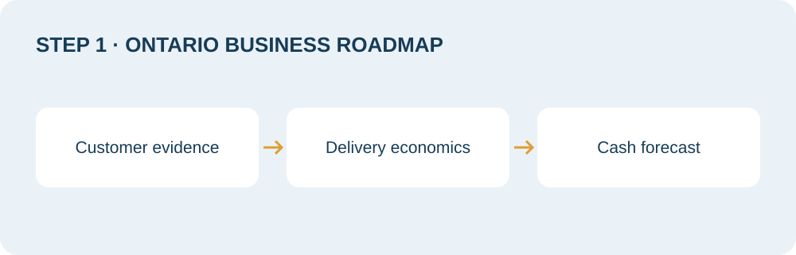
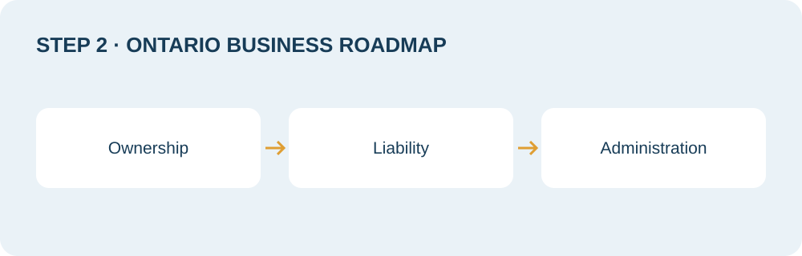
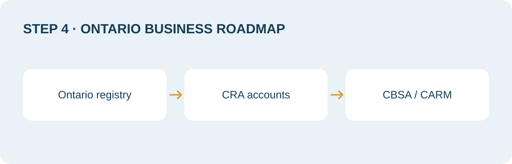
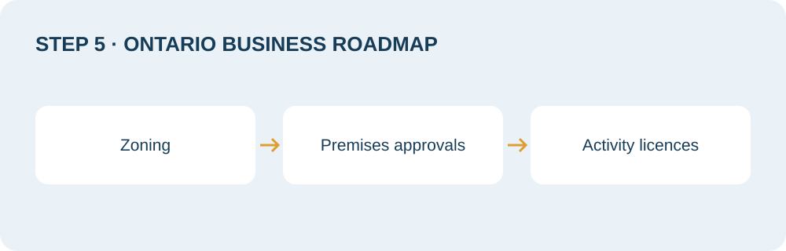
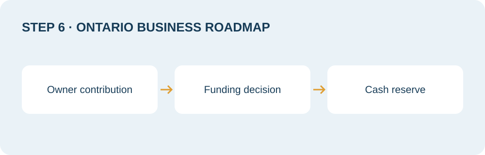
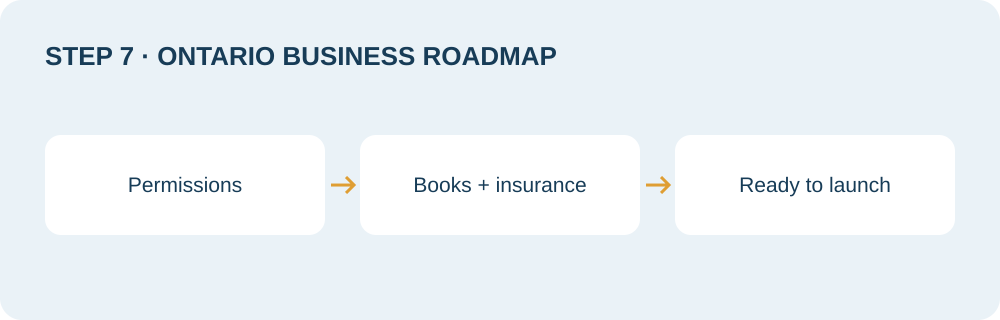

How to start a business in Ontario comes down to an honest sequence: validate the idea, write the plan, choose the structure, register the business, arrange the money and prepare to launch. Registration matters, but it does not prove demand, authorize every activity or ensure that a lender will fund you. This guide connects the paperwork to the decisions that make an opening workable.
Starting a business in Ontario can mean a home-based service, a new retail location, a skilled trade or an incorporated company with employees. Each has a different combination of permissions, insurance, cash needs and tax accounts. Begin with what you will sell, to whom, where you will operate and who will own the business. Those answers determine which registrations and approvals you need, rather than the other way around.
Use the seven numbered steps as a working roadmap. Keep a folder for confirmations, quotations, contracts and assumptions, and assign an owner to each unresolved task. Before you borrow, sign a lease or accept customer deposits, confirm the requirements that apply to your exact activity and address. This is general information, not legal or tax advice; confirm structure, liability and tax decisions with a lawyer or accountant for your situation.
Fees and requirements checked October 26, 2026. Amounts are Canadian dollars. Official filing fees exclude professional, intermediary and other business costs. Fees and rules change; follow the linked authority before submitting.
Step 1: Validate the idea and write the plan
Before you register a business in Ontario, test a specific offer with a specific customer. “People need this” is a hypothesis. Useful evidence includes conversations with likely buyers, requests for quotes, a small paid pilot and documented reasons customers choose you over an alternative. Record what was offered, the price discussed, the response and the next action. Separate encouragement from an actual willingness to buy.
If the idea is still broad, use our small business ideas guide to compare operating demands, then narrow the scope. A cleaning company serving offices has different staffing, equipment and payment patterns from a residential service. A café with seating has a different premises problem from packaged-food delivery. The plan should describe your chosen format, rather than a whole industry.
A lender may ask for a plan to understand the use of funds, owner contribution, customer evidence and repayment case. A landlord may want to understand the proposed use, operator experience and ability to meet lease obligations. Their document requests differ, so ask for the current checklist. A polished narrative cannot substitute for a credible location, a realistic opening budget or evidence that the owner can execute.
Use the free business plan generator to organize an initial draft. Compare it with our coffee shop sample plan or consulting firm sample to see how assumptions connect to operations. Replace every illustrative number with your own evidence. Keep a short assumptions register showing the source, date and confidence level of each major input.
Build a cash forecast alongside the narrative. Include equipment, deposits, inventory, professional support, insurance and the cash needed while sales develop. Distinguish invoiced revenue from collected cash and profit from money available for debt payments. Test a slower opening and lower demand. Our Canadian business planning benchmarks can provide context, but quotations and actual customer economics should drive the decision.

Step 2: Choose a structure
Ownership structure affects who signs contracts, who reports income, how decisions are made and who bears risk. Ontario’s official structure guide outlines the main options. A sole proprietorship is usually administratively simpler, while a corporation is a separate legal entity with additional obligations. The cheapest filing is not necessarily the best long-term choice.
A sole proprietor and the business are not separate legal persons. That makes setup straightforward, but business liabilities can affect personal assets. A general partnership adds shared ownership and the need to agree on contributions, authority, profit allocation and exit arrangements. Do not rely on a friendly understanding. A lawyer can explain the partnership obligations and draft an agreement that addresses disagreement, incapacity and departure.
An Ontario corporation is incorporated under Ontario legislation; a federal corporation is incorporated under federal legislation. Federal incorporation does not remove provincial registration requirements where the company carries on business. Compare where you expect to operate, the naming process, ongoing filings and professional administration. Incorporation also does not eliminate personal guarantees or every form of director liability.
Tax results depend on the facts, including income, other personal earnings, how money is withdrawn and whether profits remain in the company. Avoid assuming that a corporation automatically produces tax savings. Ask an accountant to compare the total compliance cost and the expected result under realistic scenarios. Ask a lawyer about liability, ownership rights and contracts. This comparison is informational and is not legal or tax advice.
| Structure | Practical benefit | Trade-off to review |
|---|---|---|
| Sole proprietorship | One owner; simpler administration | No separate legal person; owner bears business risk |
| General partnership | Shared ownership and resources | Partner authority, liability and exit terms need careful agreement |
| Ontario corporation | Separate entity under Ontario law | Corporate records, filings and separate tax administration |
| Federal corporation | Separate entity under federal law | Federal obligations plus applicable provincial registrations |

Step 3: Register the name
Ontario says you need to register a sole proprietorship if you are not using your own name as the business name. Confirm the exact name and ownership details before filing. A domain name, social-media handle or municipal licence does not replace business-name registration. Likewise, a registry acceptance does not settle trademark rights. Search for confusingly similar names before paying for signs, packaging or a website.
Use ServiceOntario’s Ontario Business Registry services and select the correct entity and transaction. The current term is Business Name Registration, formerly called a Master Business Licence. It is a registration record, not a universal permission to operate. Keep the confirmation and access information securely, and ensure the email belongs to someone responsible for maintaining the business record.
The Ontario fee schedule, checked October 26, 2026, lists $60 for a new sole proprietorship or general partnership business-name registration and $300 for Ontario business-corporation incorporation. These are government filing fees for the identified transactions. An intermediary, lawyer, name-search provider or accountant can charge separately; read the total before authorizing a submission.
For a named Ontario corporation, check the Ontario-biased or weighted NUANS search requirements. Ontario’s names and filings regulation requires the applicable report to be dated no more than 90 days before submission of the articles. Numbered corporations follow a different naming route. For federal incorporation, the federal fee and service page lists online business incorporation at $200 and includes the corporate name search in the incorporation process. Do not purchase an Ontario search assuming it satisfies a federal application.
Ontario’s registry guidance says a Business Name Registration is valid for five years. Record the expiry date and use the authority’s current renewal instructions. A corporation has different maintenance obligations; incorporation should not be treated as a one-time administrative task. Give your professional advisers the exact registration documents so the entity named on the bank account, tax records, invoices and contracts is consistent.
Step 4: Set up the CRA business number and accounts
The CRA business number identifies the business for federal programs; it is different from an Ontario registry identifier. A program account adds a program identifier and reference to the business number. First check what was already issued through incorporation or registration so you do not request a duplicate. The CRA explains when a business number is needed and which integrations issue one automatically.
Use the CRA’s current business registration instructions. Business Registration Online is accessed through a CRA account under the current process. Have ownership, activity, address and account information ready. Register for the accounts the business actually needs, and save the effective dates and confirmations. Do not confuse obtaining a business number with becoming registered for GST/HST.
For most businesses, the GST/HST small-supplier threshold is $30,000 in worldwide taxable supplies, including applicable associated-person revenues, before expenses. It is not a profit threshold or simply a year-end sales test. The CRA registration rules distinguish exceeding the threshold in one calendar quarter from exceeding it over four consecutive calendar quarters. Special rules and exceptions apply, so confirm your activity with an accountant.
When the threshold is exceeded in one quarter, the supply that takes you over is included in the charging obligation. When it is exceeded across consecutive quarters without exceeding it in a single quarter, the effective-date rule differs. Use the CRA’s examples to establish your own date, rather than waiting until you prepare the annual return. A small supplier making taxable supplies may consider voluntary registration, but should understand collection, reporting and input-tax-credit implications before choosing it.
If you will employ people, review the CRA’s payroll account guidance and establish how pay, deductions and remittances will be administered. Separately, use WSIB’s registration guidance to determine coverage. WSIB states that businesses required to register generally have 10 calendar days after hiring their first employee; industry-specific coverage can differ, including construction. Confirm directly rather than assuming a sole proprietor never needs coverage.
Importing or exporting commercial goods adds a separate customs workflow. Consult CBSA’s import setup guide and its export account instructions. The CARM Client Portal handles the relevant RM program enrolment. A customs broker can assist, but portal access, delegated authority, duties and recordkeeping still need attention. Do not rely on an older instruction that treats the import/export account as an ordinary new CRA account.

Step 5: Check municipal licences and permits
Check your municipality before committing to premises. Business-name registration and incorporation do not establish that your activity is permitted at an address. Zoning, building work, signage, fire safety and activity-specific licences can create different approval paths. A lease should describe the intended use accurately, and professional advice may be needed on conditions that protect you while approvals are unresolved.
The City of Toronto business regulations directory illustrates why the business category matters. Food service, personal services and vehicle-related activities can trigger different requirements. For a café, investigate the premises, food-related requirements, building work and signs rather than searching only for a generic “business licence.” For a home office, ask about the actual activity, visitors, deliveries and property restrictions.
Toronto’s startup guidance points founders to zoning checks and BizPaL for identifying permits and licences. Treat a search result as a starting point for confirmation with the issuing authority. Describe your full operation, including secondary activities, and ask which approvals must be in place before construction, occupancy or trading. Keep written responses with the plan.
Outside Toronto, check your own municipality and the relevant provincial or federal regulator. Requirements in Ottawa, Mississauga, Hamilton or a smaller Ontario community are not interchangeable. Budget the actual application, inspection and professional costs from the applicable sources. Do not attach a universal municipal fee or approval time to the opening forecast. Make the opening date conditional on the approvals your particular location requires.

Step 6: Open a business bank account and arrange financing
Ask the bank what documents it needs for your structure and signing authority. Bring the registration or incorporation documents, identification and ownership information requested by the institution. A separate business account makes reconciliation and evidence easier, even when a sole proprietor is considering a simple operating setup. For a corporation, keep company transactions and owner transactions clearly documented with accounting advice.
Match the financing request to the use of money. Equipment, leasehold improvements, inventory and the cash needed before invoices are collected have different risk and repayment characteristics. A term loan and a revolving facility solve different problems. Show when each cost is payable and what happens if the opening slips. Do not treat a grant application, pending loan or unsigned investor discussion as available cash.
The Canada Small Business Financing Program hub explains the lender-delivered route. The federal government shares lending risk under the program; the lender still assesses the borrower and decides on the application. Review our BDC financing guide and BDC business plan preparation guide for another route to investigate. Confirm current products, eligible uses and stage requirements directly with the provider.
Our Futurpreneur guide is relevant for founders who may fit its current eligibility criteria and mentoring model. Compare routes in the small business financing resource centre rather than applying indiscriminately. Ask each provider what evidence is required and whether financing can cover the actual costs in your plan. A plan supports an application; it does not guarantee approval.
For non-repayable support, use our Ontario business grants research guide to start a current official-program search. Separate grants from loans, tax credits and advisory services. A program can restrict the applicant, project, location, spending date or eligible expenses. Build a base case that works without unapproved assistance, and document the conditions before treating support as part of the launch funding.
Turn the roadmap into your working plan
Organize the customer evidence, opening costs and financing assumptions in one draft.
Start your free business plan draft
Step 7: Arrange insurance, bookkeeping and the launch checklist
Describe the actual activities to an insurance broker, including locations, vehicles, employees, customer property, online sales and professional services. Ask about relevant liability, property, professional, cyber and interruption cover, and how exclusions affect the operation. A landlord or customer may specify limits and proof of cover. Obtain the terms for your business rather than relying on a competitor’s premium or a generic online estimate.
Set up bookkeeping before transactions become difficult to reconstruct. Choose an accounting system, a receipt process and a person responsible for reconciliation. Separate owner contributions, borrowing, sales, customer deposits and tax collected. Create consistent invoice descriptions and payment terms. If inventory or projects are material, decide how their costs will be tracked so revenue can be compared with the resources used to deliver it.
Agree on a review routine with your bookkeeper or accountant. Review cash available, bills due, customer balances, inventory and the assumptions behind the next spending decision. Save source documents and approvals in a secure, backed-up system. Restrict access appropriately and document who can authorize payments. A clear process is more useful than software that nobody maintains.
Treat launch as a readiness decision. Run a sample order from enquiry through delivery, invoicing, payment and reconciliation. Confirm that customer communications, supplier arrangements and any required permissions are consistent with the operating model. Start with a scope the team can deliver reliably, then use actual results to update the plan. The checklist below is a working control, not a substitute for sector-specific professional advice.
| Ready? | Check | Evidence to retain |
|---|---|---|
| ☐ | Offer tested | Customer feedback, paid pilot or documented demand evidence |
| ☐ | Plan reconciled | Narrative, quotations and cash forecast agree |
| ☐ | Structure and name confirmed | Registration documents and adviser notes |
| ☐ | Tax and worker accounts assessed | Account confirmations and applicable effective dates |
| ☐ | Location and activity approved | Zoning confirmation, permits and licence records |
| ☐ | Banking and funding ready | Signing authority, actual funding and payment controls |
| ☐ | Insurance active | Policy, relevant exclusions and certificates |
| ☐ | Books and invoicing ready | Receipt storage, accounting access and a reconciled sample sale |
| ☐ | Opening approved internally | Outstanding issues resolved; named owner authorizes launch |

Cost summary: official fees and accounts
The filing fee is only one part of the cost to start a business in Ontario. The table separates verified government amounts from costs that depend on your activity or provider. It is not a complete startup budget. No universal total is offered because premises, equipment, stock, labour and operating reserves differ substantially.
Checked October 26, 2026; fees can change. Ontario amounts were verified against official search-indexed fee and registration pages because direct page retrieval returned an access error. Follow the sources before paying. Where the reviewed authority did not explicitly establish a registration charge, no numerical fee is asserted.
| Registration or account | Official fee / verification status | Where and source |
|---|---|---|
| Ontario sole proprietorship business-name registration | $60 | Ontario fee schedule |
| Ontario general partnership business-name registration | $60 | Ontario fee schedule |
| Ontario business corporation incorporation | $300 | Ontario registration guide |
| Federal business corporation incorporation, online | $200; corporate name search included | Corporations Canada |
| Ontario NUANS report | Provider charge not verified; obtain a quote separately | Ontario naming requirements |
| CRA business number / GST/HST / payroll accounts | No numerical registration fee asserted; consult current CRA process | CRA business registration |
| CBSA import/export RM enrolment | No numerical registration fee asserted; duties, security and broker costs are separate | CBSA CARM registration |
| WSIB coverage | Premiums depend on the business; no flat startup cost asserted | WSIB registration |
| Municipal licences and permits | Varies by activity and municipality; verify each application | Toronto regulations directory |
Build your own opening budget from dated quotations and payment terms. Include professional assistance, banking, insurance, software, marketing and contingencies, then show how operating cash survives a delayed opening or slower collections. Do not add the Ontario and federal incorporation fees together as if everyone must incorporate twice; choose the route with advice and identify the provincial registrations that actually apply.
Frequently asked questions
How much does it cost to start a business in Ontario?
The total depends on the activity, premises, equipment and operating reserve. As checked October 26, 2026, Ontario lists $60 for a new sole proprietorship or general partnership business-name registration and $300 for Ontario business-corporation incorporation. Federal online business incorporation is $200. These are distinct filing routes, not a complete opening budget. Use the linked official schedules and obtain quotes for the remaining costs.
Do I need to register a sole proprietorship in Ontario?
Ontario says you need to register if you are not using your own name as the business name. Confirm that your exact proposed name fits the rule. Operating under your own name does not remove tax, municipal, insurance or sector-specific obligations. Business Name Registration, formerly called a Master Business Licence, does not authorize every activity or location.
When do I need an HST number?
For most businesses making taxable supplies, registration becomes mandatory when they cease to be a small supplier under CRA rules. The usual threshold is $30,000 in worldwide taxable supplies, including applicable associates, before expenses. Single-quarter and consecutive-quarter tests have different effective-date rules, and exceptions apply. Consult the CRA examples and confirm the effective date with an accountant; eligible small suppliers may also register voluntarily.
Should I incorporate or stay a sole proprietor?
Compare liability, ownership, contracts, administrative cost and the expected tax result. A sole proprietorship is simpler but has no separate legal personality. Incorporation creates a separate entity and additional obligations, and does not eliminate personal guarantees or all director liability. Ask a lawyer and accountant to assess your circumstances rather than choosing only by the filing fee.
Do I need a business plan for a loan?
Lenders commonly request a plan and financial projections for startup financing, but the exact checklist depends on the lender, facility and applicant. Prepare customer evidence, owner experience, a clear use of funds, quotations, owner contribution and a credible repayment case. Ask the institution for its current requirements. A completed business plan does not guarantee loan approval.
How long does the whole process take?
There is no reliable single timeline for every Ontario business. Registration is only one dependency; premises approvals, renovations, financing, supplier lead times and sector permissions can determine the opening date. Use current service standards from each authority as planning inputs, not an end-to-end guarantee. Build a dependency schedule and confirm each prerequisite before promising customers an opening date.
About the author

Written by Atul Jagga, CPA (Ontario), RCIC-IRB — Founder of The Biz Plans, Toronto. Atul holds an MBA in Finance & Strategy from UBC and has over two decades of experience in corporate finance, consulting and immigration strategy, including corporate finance projects involving RBC, BMO and CIBC. Since 2016, he has written bank-financing and investor business plans for Canadian startups and small businesses.
Prepare the plan behind your Ontario launch
Bring your idea, evidence, quotations and financing goal. Discuss a scope for research, business plan writing and financial modelling.
Explore business plan services Discuss your launch plan